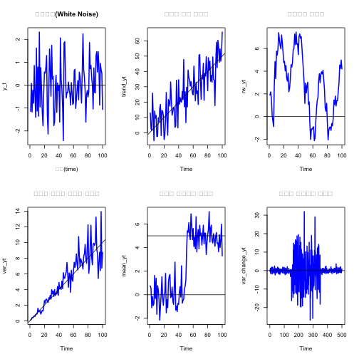
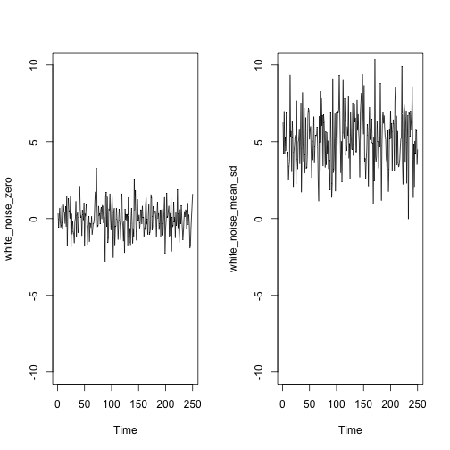
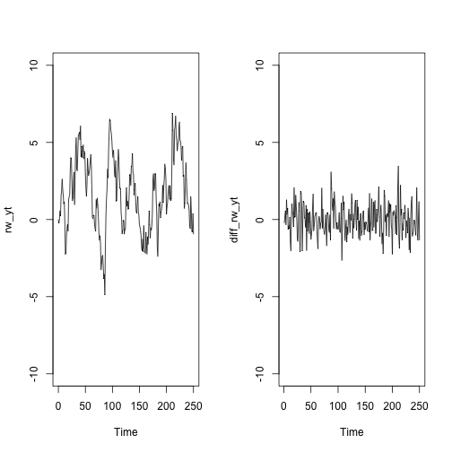

데이터 과학 – 기초 통계
탐색적 시계열 데이터 분석
학습 목표
- 시계열 데이터 유형을 파악한다.
- 주요 시계열 모형 및 기본 가정을 살펴본다.
시계열 데이터 종류
시계열 데이터의 종류는 크게 보면 두가지 구체적으로 세가지 유형이 있다.
- 등간격 규칙을 갖는 시계열 데이터
- 불규칙 간격을 갖는 시계열 데이터
- 등간격 규칙을 갖으나 결측값이 포함된 시계열 데이터
다음에 나와 있는 시계열 데이터는 이를 특성을 잘 나타내고 있다.
library(zoo)
par(mfrow=c(3,1))
# 규칙을 갖는 시계열 데이터 ---------------------------------
reg_ts_dat <- ts(sample(20), frequency = 4 , start= 1998)
reg_ts_dat Qtr1 Qtr2 Qtr3 Qtr4
1998 12 18 1 19
1999 11 6 14 9
2000 4 5 7 15
2001 2 17 8 10
2002 13 3 16 20
plot(reg_ts_dat, type="o", lty=5, lwd=0.8, pch="O", col=2, xlab="", ylab="")
# 불규칙 시계열 데이터 --------------------------------------
## 불균등 관측점을 갖는 시계열 데이터 -----------------------
dat_date <- c("2016-12-05", "2016-11-30", "2016-12-7" ,"2016-12-17" ,"2016-11-15", "2016-12-31", "2016-12-28")
dat_value <- sample(7)
dat_zoo <- zoo(dat_value, as.Date(dat_date))
plot(dat_zoo, type="o", lty=5, lwd=0.7, pch="O", col=2, xlab="", ylab="")
## 규칙을 갖는 시계열이나 결측값이 있는 시계열 데이터 -------
dat <- c(sample(3),NA,sample(3), NA, sample(4))
ts_dat <- ts(dat, start = c(2016, 1), frequency=12)
plot(ts_dat, type="o", lty=5, lwd=0.7, pch="O", col=2, xlab="", ylab="")
시계열 데이터 기본 가정 및 시계열 모형
시계열 데이터에 대한 기본 가정은 다음과 같다.
- 시계열 관측점은 등간격(equally spaced)이다.
- 시간 인덱스는 이산 시간 관측점을 적용한다.
- 이런 가정은 근사적으로 성립한다.
- 주식시장 일별 수익률은 주말과 휴일에는 적용되지 않는다.
- 주요 경제지표(소비자 물가지수 등)는 일별이 아닌 월별로 적용된다.
시계열 모형은 크게 4가지 모형으로 분류된다.
- 백색잡음 (White Noise)
- 랜덤워크 (Random Walk)
- 자기회귀 (Autoregression)
- 이동평균 (Moving Average)
시계열 데이터 분석 흐름 1
시계열 데이터를 분석하기 위해서 가장 먼저 문자형과 숫자형으로 준비된 데이터프레임을 시간자료구조를 포함한 적절한 데이터프레임으로 변환하는 과정이 필요하다. 시계열 데이터프레임이 준비되면 시각화를 통해 시계열 데이터 상태를 파악하고 정상 시계열 데이터로 변화하는 과정에 전념한다.
시계열 데이터는 백색잡음 시계열, 증가 혹은 감소하는 추세를 갖는 시계열, 분산이 변화하는 시계열, 평균이 변화하는 시계열, 계절성 주기를 갖는 시계열등 다양하다.
par(mfrow=c(2,3))
# 백색잡음 시계열 -----------------------------------------------------------
y_t <- rnorm(100, mean=0, sd=1)
ts.plot(y_t, main="백색잡음(White Noise)",xlab="시간(time)", col="blue", lwd=2)
abline(h=0)
# 추세를 갖는 시계열--------------------------------------------------
e <- rnorm(100, 0, 10)
trend_yt <- 0.5*seq(1,100) + e
ts.plot(trend_yt, lwd=2, col="blue", main="추세를 갖는 시계열")
abline(a=0, b=0.5)
# 랜덤워크 시계열 -----------------------------------------------------------
e <- rnorm(100)
rw_yt <- cumsum(e)
ts.plot(rw_yt, lwd=2, col="blue", main="랜덤워크 시계열")
abline(h=0)
# 분산이 커지는 시계열 -----------------------------------------------------------
e <- sapply(1:100, function(x) rnorm(1, sd = 2*x/100))
var_yt <- 0.1*seq(1,100) + e
ts.plot(var_yt, lwd=2, col="blue", main="추세와 분산이 커지는 시계열")
abline(a=0, b=0.1)
# 평균이 증가하는 시계열 -----------------------------------------------------------
mean_yt <- c(rnorm(50), rnorm(50, 5))
ts.plot(mean_yt, lwd=2, col="blue", main="평균이 변화하는 시계열")
abline(a=0, b=0)
abline(a=5, b=0)
# 분산이 변화하는 시계열 -----------------------------------------------------------
var_change_yt <- c(rnorm(150,0,1), rnorm(200,0,10), rnorm(150,0,1))
ts.plot(var_change_yt, lwd=2, col="blue", main="분산이 변화하는 시계열")
abline(a=0, b=0) 
| 백색잡음 | 추세를 갖는 시계열 | 랜덤워크 시계열 |
|---|---|---|
| 추세와 분산이 커지는 시계열 | 평균이 변화하는 시계열 | 분산이 변화하는 시계열 |
정상성(Stationarity) 확보
정상성을 확보하는 것이 중요하기 때문에 정상성을 갖지 않는 시계열 데이터를 정상 시계열로 돌리는데 다음과 같은 기법이 동원된다.
- 로그변환: \(log(Y_t )\) 을 통해 분산이 커지는 경향을 갖는 시계열을 안정화 시킴.
- 차분: \(diff(Y_t )\) 을 통해 차분을 하계 되면 추세를 제거하는 효과를 거둠.
- 계절차분: \(diff(Y_t , s)\) 을 통해 계절 차분을 하계 되면 계절추세를 제거하는 효과를 거둠.
백색잡음(White Noise)
백색잡음(White Noise)은 백색잡음은 고정된 평균, 분산을 갖고 시계열 상관은 없는 시계열 데이터로 arima.sim() 함수를 통해 모수를 조절해서 백색잡음 시계열을 추출할 수 있다. \(\mu=0, \sigma=1\)인 백색잡음 시계열과 \(\mu=5, \sigma=4\)인 백색잡음 시계열은 다음과 같은 형태를 띈다. arima 모형을 적합시키면 \(\mu=5, \sigma=4\) 값에 가깝게 추정한 것을 확인할 수 있다.
# 백색잡음 시계열 -----------------------------------------------------------
white_noise_zero <- arima.sim(model = list(order = c(0, 0, 0)), n = 250)
white_noise_mean_sd <- arima.sim(model = list(order = c(0, 0, 0)), n = 250, mean =5, sd =2)
par(mfrow=c(1,2))
ts.plot(white_noise_zero, ylim=c(-10,10))
ts.plot(white_noise_mean_sd, ylim=c(-10,10))
arima(white_noise_mean_sd)
Call:
arima(x = white_noise_mean_sd)
Coefficients:
intercept
4.9079
s.e. 0.1321
sigma^2 estimated as 4.363: log likelihood = -538.88, aic = 1081.77
랜덤워크(Random Walk)
랜덤워크는 다음과 같은 재귀식으로 표현된다.
\(\text{오늘} = \text{어제} + \text{잡음}\)
수학적으로 표현하면
\(Y_t = Y_{t-1} + \epsilon_t\)
단위근(Unit root)가 존재하여 초기값 \(Y_0\)를 지정하는 것이 모의시험을 위해 필요하고, 랜덤워크 분산 \(\sigma^2\) 모수만 갖는 확률과정이다.
\(Y_t - Y_{t-1} = \epsilon_t\)
차분(diff())을 하게 되면 백색잡음 과정으로 환원된다.
arima.sim() 함수에 차분 모수를 1로 설정하면 랜덤워크 시계열을 모의추출할 수 있다. 이를 차분하면 백색잡음과정이 되고 이를 arima 모형으로 추정하면 평균과 분산이 처음 모의시험에서 설정한 모수에 근접함이 확인된다.
# 랜덤워크 시계열 -----------------------------------------------------------
rw_yt <- arima.sim(model = list(order = c(0, 1, 0)), n = 250)
diff_rw_yt <- diff(rw_yt)
par(mfrow=c(1,2))
ts.plot(rw_yt, ylim=c(-10,10))
ts.plot(diff_rw_yt, ylim=c(-10,10))
arima(diff_rw_yt)
Call:
arima(x = diff_rw_yt)
Coefficients:
intercept
-0.0803
s.e. 0.0651
sigma^2 estimated as 1.058: log likelihood = -361.77, aic = 727.54